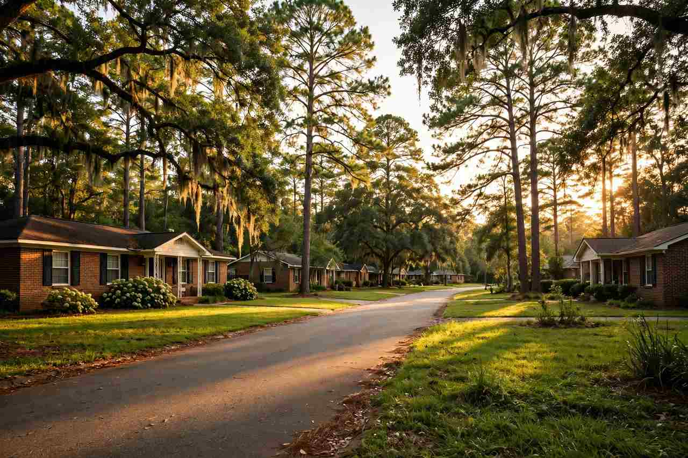

Rodent Control · Pine Hill, AL
Fast Rodent Control in Pine Hill, AL
Hearing scratching at night or finding droppings in Pine Hill? Murvo is a rodent-only specialist offering same-day service from local crews. We identify the species, remove the infestation, clean up the mess, and exclude rodents for good. Pricing is flat-rate and quoted in writing, the work is guaranteed in writing, and coverage extends across Wilcox County for homes and businesses alike. Local crews cover 1 ZIP codes in the Pine Hill area, from Boykin to the far side of Wilcox County.
24/7Availability
1ZIP codes covered
Same-dayResponse
Licensed · Upfront options · Written guarantees · Fully insured
Pine Hill at a glance
Local Rodent Control for Pine Hill, AL.
Wilcox County
Countywestern Alabama
RegionMontgomery · 81 mi
Nearest metro80 miles west of Montgomery
From Montgomery1
ZIP codes covered Service by service in Pine Hill
Rodent Control Services Available in Pine Hill
The full range of residential and commercial rodent services in Pine Hill and Wilcox County - built around the species and housing here, from emergency removal and same-day control to exclusion, proofing, trapping, cleanup, and damage repair. Every service below is quoted flat-rate in writing and backed by our workmanship guarantee.
- 01Rodent Control↗
- 02Rodent Inspection↗
- 03Rodent Removal↗
- 04Rodent Exclusion↗
- 05Rodent Proofing↗
- 06Rat Control↗
- 07Mice Control↗
- 08Mouse Removal↗
- 09Rat Removal↗
- 10Rodent Trapping↗
- 11Rodent Baiting↗
- 12Rodenticide Application↗
- 13Attic Rodent Removal↗
- 14Crawl Space Rodent Removal↗
- 15Wall Rodent Removal↗
- 16Kitchen Rodent Control↗
- 17Garage Rodent Control↗
- 18Commercial Rodent Control↗
- 19Residential Rodent Control↗
- 20Emergency Rodent Removal↗
- 21Same-Day Rodent Control↗
- 22Rodent Damage Repair↗
- 23Rodent Waste Cleanup↗
- 24Rodent Disinfection↗
- 25Rodent Odor Removal↗
- 26Dead Rodent Removal↗
- 27Rodent Dropping Cleanup↗
- 28Rodent Exclusion for Roofs↗
- 29Rodent Exclusion for Vents↗
- 30Rodent Exclusion for Chimneys↗
Rodent Control in Pine Hill
Rodent Control in Pine Hill
What does a finished job actually look like? No new droppings, no nighttime movement, and no open route back inside. That is the standard Murvo works toward in Pine Hill, with background-checked technicians, a written workmanship guarantee, and follow-up checks that confirm the quiet is real rather than temporary luck.
Homeowners in Pine Hill call Murvo for rodent control because the problem here is specific: Roof rat (Rattus rattus) pressure around bungalows and ranch homes with crawlspaces, historic homes, and suburban homes under mature tree canopy, tight access at rooflines and eaves, attic vents, crawlspace doors and vents, and gaps where tree limbs touch the roof, and activity that follows the local season. Our Wilcox County crews diagnose the real source before recommending work, explain the options in plain language, and quote one flat rate in writing. Across Pine Hill - including Yellow Bluff, Thomasville - every visit is backed by licensed, insured technicians and our written workmanship guarantee. Around Boykin, Vredenburgh, Yellow Bluff, the pattern is similar: Norway rat (Rattus norvegicus) finds rooflines and eaves, attic vents, crawlspace doors and vents, and gaps where tree limbs touch the roof first, and lasting rodent control has to close those routes.
Our process follows five stages: Inspect, Remove, Exclude, Clean, and Monitor. Contaminated areas are cleaned safely, and monitoring visits confirm activity has stopped before we sign the job off. A technician first checks the attic, crawl space, garage, and kitchen, recording droppings, nests, gnaw marks, and entry gaps with photos. Active animals are cleared with targeted trapping matched to the species, then openings around pipes, vents, and rooflines are sealed with copper mesh, hardware cloth, and metal flashing. You approve every stage in advance, in writing.
When you call, tell us what you have seen and when the noises happen. Once you approve, trapping and sealing are booked in sequence, monitoring is scheduled, and the guarantee is left with you in writing at completion. That detail shapes the first visit. Your technician arrives as scheduled, inspects, and lays out findings before quoting. Keep the visit notes we leave behind; together they form a clear record of findings, approvals, completed work, and the monitoring results that closed the job.
Need help quickly in Pine Hill? Call any time — the emergency line is staffed 24/7, and same-day rodent control appointments are available in most areas. We inspect first, explain the plan in plain language, and put the flat rate in writing before work starts. In Wilcox County, most cases involve the Roof rat (Rattus rattus) and the Norway rat (Rattus norvegicus), so the inspection focuses on their routes first.
The honest answer is that it depends on species, activity level, and how much sealing your home needs, which is why Murvo inspects first and then gives you a flat-rate quote in writing. For national context only, Angi's 2026 data averages rat and mouse removal and control at $396, typically $189 to $655; that is not a Murvo price, and your written quote is the figure you pay.
Rodent Inspection in Pine Hill
Rodent Inspection in Pine Hill
In bungalows and ranch homes with crawlspaces, historic homes, and suburban homes under mature tree canopy, the gap that matters is seldom the gap you can see. Rodents enter through rooflines and eaves, attic vents, crawlspace doors and vents, and gaps where tree limbs touch the roof and travel hidden routes, so a rodent inspection in Wilcox County has to look behind, above, and below. Our technicians trace those routes systematically and explain, in plain language, which findings demand action now.
When you need rodent inspection in Pine Hill, the job starts with what is actually happening in your part of Wilcox County. Murvo crews work Pine Hill every week, so they know how Roof rat (Rattus rattus) and Norway rat (Rattus norvegicus) behave around bungalows and ranch homes with crawlspaces, historic homes, and suburban homes under mature tree canopy here - and where they get in: rooflines and eaves, attic vents, crawlspace doors and vents, and gaps where tree limbs touch the roof. We arrive equipped for the full job, confirm the flat rate in writing before work begins, and cover the whole Pine Hill area, including Yellow Bluff, Thomasville. No call-center runaround and no open-ended hourly billing - just a local crew, a clear plan, and a written quote you approve first. In Pine Hill, rodent inspection calls most often involve bungalows and ranch homes with crawlspaces, historic homes, and suburban homes under mature tree canopy, where rooflines and eaves, attic vents, crawlspace doors and vents, and gaps where tree limbs touch the roof decide whether the fix holds.
The inspection starts outside, where we check the foundation, siding, pipe penetrations, garage doors, and roof junctions, because mice can squeeze through a gap the width of a pencil. Inside, we examine the attic, crawl space, insulation, stored items, and food areas for droppings, nests, rub marks, and gnaw damage. We also note where bungalows and ranch homes with crawlspaces, historic homes, and suburban homes under mature tree canopy create hidden routes through rooflines and eaves, attic vents, crawlspace doors and vents, and gaps where tree limbs touch the roof. Every finding is photographed and explained, and recommendations are marked urgent or preventive so you can stage the work sensibly.
Booking a rodent inspection in Pine Hill takes one call, and same-day appointments are often available. Nothing proceeds without your approval, and urgent items are clearly flagged. Your technician arrives on time, walks the property with you, and inspects the attic, crawl space, and exterior in one visit. Findings are explained with photos before you receive a flat-rate written quote for any recommended work. You keep the full written report either way.
You do not have to wait days for answers in Pine Hill. Same-day rodent inspection appointments are available in most areas, urgent calls are taken 24/7, and most home inspections take under an hour. You finish the visit with photos, written findings, and flat-rate pricing for anything we recommend. Murvo's Pine Hill crews explain the finding either way, and the flat-rate quote leaves the decision with you.
Your exact rodent inspection price is confirmed before we visit, and any follow-up work is quoted as a flat rate in writing after the inspection — no hourly billing. For context, Angi's 2026 data puts a professional rodent inspection nationally at $100 to $200, often credited toward the job if you proceed.
Rodent Removal in Pine Hill
Rodent Removal in Pine Hill
Removal works best when it is species-specific. In Pine Hill, bungalows and ranch homes with crawlspaces, historic homes, and suburban homes under mature tree canopy give Roof rat (Rattus rattus) and Norway rat (Rattus norvegicus) warm voids, stored food, and quiet nesting corners reached through rooflines and eaves, attic vents, crawlspace doors and vents, and gaps where tree limbs touch the roof. Our licensed, insured technicians assess numbers and access routes first, then set traps on proven runways and return on schedule until catches fall to zero and monitoring stays clear.
In Pine Hill, rodent removal is not a generic spray-and-go service. Rodents exploit rooflines and eaves, attic vents, crawlspace doors and vents, and gaps where tree limbs touch the roof in bungalows and ranch homes with crawlspaces, historic homes, and suburban homes under mature tree canopy, and a fix that ignores those routes does not last. Murvo's Pine Hill team inspects first, shows you the evidence - droppings, gnaw marks, entry gaps - and then lays out the work with a flat-rate written quote. We serve all of Wilcox County from Pine Hill, including Yellow Bluff, Thomasville, and every job is covered by our written workmanship guarantee. Coverage for rodent removal spans 1 ZIP codes in Wilcox County, including 36769.
Removal starts with an assessment of species, numbers, and access routes across attics, wall voids, garages, and kitchens. Catch records show progress clearly instead of relying on guesswork. Removal is followed immediately by entry-point exclusion, because new rodents will replace removed ones through any gap left open, and disinfection is arranged after heavy activity. Once you approve the written quote, technicians set traps along proven runways, check them on schedule, and remove animals promptly and hygienically. Photos document each stage for you.
Once removal is underway, expect short, predictable visits. When catches reach zero, monitoring confirms it, sealing is discussed, and the job closes with a walkthrough and your guarantee paperwork in hand before we leave. Your technician checks each mapped trap, removes catches hygienically, resets what is still needed, and updates the record with you. At close, prevention advice is tailored to what actually attracted rodents to your property, not copied from a generic checklist.
When rodents are active indoors in Pine Hill, waiting rarely helps. Rodent removal can usually start the same day you call, our line answers 24/7 for a rodent loose in a living area, and the first visit sets traps straight away. Scheduled returns then clear and reset them until monitoring shows the home is clear. In Wilcox County, activity follows the local season, so timing the work matters as much as the method.
How many animals are active, which species they are, and how much sealing follows removal all shape the price, so we assess first and then quote one flat rate in writing. Angi's 2026 national context — an average of $396 and a typical $189 to $655 range for rat and mouse removal — is provided for comparison only; your written quote is the exact Murvo figure.
Rodent Exclusion in Pine Hill
Rodent Exclusion in Pine Hill
What makes sealing permanent rather than cosmetic? Material rodents cannot chew, fitted so weather cannot lift it. Murvo uses copper mesh, hardware cloth, and metal flashing where each belongs, installed by licensed and insured crews. Every finished seal is photographed, walked through with you, and covered by a written workmanship guarantee.
Homeowners in Pine Hill call Murvo for rodent exclusion because the problem here is specific: Roof rat (Rattus rattus) pressure around bungalows and ranch homes with crawlspaces, historic homes, and suburban homes under mature tree canopy, tight access at rooflines and eaves, attic vents, crawlspace doors and vents, and gaps where tree limbs touch the roof, and activity that follows the local season. Our Wilcox County crews diagnose the real source before recommending work, explain the options in plain language, and quote one flat rate in writing. Across Pine Hill - including Yellow Bluff, Thomasville - every visit is backed by licensed, insured technicians and our written workmanship guarantee. Seasonal timing matters for rodent exclusion in Pine Hill: Rodents are most active in Pine Hill from September through February.
Before any sealing, active rodents are cleared with trapping so nothing is trapped inside the structure. Because exclusion removes the route in rather than relying on chemicals, it reduces the need for rodenticides and supports pet-safe, no-poison control. A final walkthrough shows you every protected opening, and monitoring checks confirm no new activity appears at sealed points. We then work opening by opening around rooflines and eaves, attic vents, crawlspace doors and vents, and gaps where tree limbs touch the roof, rooflines, and utility penetrations, photographing each finished seal. Every seal is listed on your written guarantee.
The visit starts with a check that no animals remain inside, using trapping and monitoring where needed. Once clear, your background-checked crew seals the agreed openings with chew-resistant materials, working cleanly around your home. Before leaving, we show you each finished seal, explain how it was protected, and confirm the guarantee paperwork. A later re-check confirms the seals are holding and activity has stopped. You approve the finished work before we close the job.
Rodent exclusion in Pine Hill usually starts with a survey visit we can often schedule the same day you call. Sealing itself is booked as soon as any active animals are cleared, because nothing is sealed inside. Most homes are fully sealed within days, not weeks, and urgent entry points near wiring or food areas are prioritized first. The written quote for your Pine Hill property will spell out exactly which of these applies before any work starts.
After the survey of your Pine Hill home, every opening that needs sealing is listed and priced as one flat-rate written quote, so you pay only for the work your property needs. For national context, Angi's 2026 data puts basic exclusion at $200 to $600 depending on access and the number of openings; that benchmark is not a Murvo price.
Rodent Proofing in Pine Hill
Rodent Proofing in Pine Hill
In bungalows and ranch homes with crawlspaces, historic homes, and suburban homes under mature tree canopy, prevention is a checklist hiding in plain sight: light under doors, unscreened vents, branches touching the roof, and clutter against walls near rooflines and eaves, attic vents, crawlspace doors and vents, and gaps where tree limbs touch the roof. Murvo works through that checklist across Wilcox County properties, separating simple homeowner fixes from specialist sealing, so money goes only where professional materials genuinely help.
When you need rodent proofing in Pine Hill, the job starts with what is actually happening in your part of Wilcox County. Murvo crews work Pine Hill every week, so they know how Roof rat (Rattus rattus) and Norway rat (Rattus norvegicus) behave around bungalows and ranch homes with crawlspaces, historic homes, and suburban homes under mature tree canopy here - and where they get in: rooflines and eaves, attic vents, crawlspace doors and vents, and gaps where tree limbs touch the roof. We arrive equipped for the full job, confirm the flat rate in writing before work begins, and cover the whole Pine Hill area, including Yellow Bluff, Thomasville. No call-center runaround and no open-ended hourly billing - just a local crew, a clear plan, and a written quote you approve first. Around Boykin, Vredenburgh, Yellow Bluff, the pattern is similar: Norway rat (Rattus norvegicus) finds rooflines and eaves, attic vents, crawlspace doors and vents, and gaps where tree limbs touch the roof first, and lasting rodent proofing has to close those routes.
Materials follow the same standard as full exclusion work: copper mesh packed into irregular gaps, hardware cloth over openings that need airflow, flashing at vulnerable junctions, and sealants matched to smaller cracks. Around kitchens, pipe runs and the voids behind units receive particular attention, because warmth and food meet there. The written plan photographs each weakness, states who handles it, and schedules a seasonal re-check, since new gaps appear as a building ages and proofing works best as maintenance. Seasonal timing is noted in the plan as well.
On proofing day, expect one tidy visit for most homes. Before leaving, you walk the finished work together, confirm the guarantee in writing, and book the seasonal re-check that keeps the protection current year after year. Agreed sealing and screening are completed, sweeps are fitted, and attractant advice is tailored to your garage, kitchen, and yard. The re-check is not a formality, because it catches shifted sweeps, damaged screens, and new gaps before rodents discover them first.
Rodent proofing is preventive, so there is rarely a rush, but surveys in Pine Hill can often be arranged the same day you call, and always within a few days. Most proofing work is completed in a single visit once you approve the plan, and booking before colder weather gives your home protection ahead of the seasonal rush indoors. The written quote for your Pine Hill property will spell out exactly which of these applies before any work starts.
For national context, Angi's 2026 data puts exclusion, the core of proofing, at $200 to $600 for basic work. That figure is a benchmark, not a Murvo price. After surveying your Pine Hill property, we separate quick homeowner wins from specialist sealing and quote the professional work as one flat rate in writing, so you can stage spending sensibly.
Rat Control in Pine Hill
Rat Control in Pine Hill
In Pine Hill, bungalows and ranch homes with crawlspaces, historic homes, and suburban homes under mature tree canopy give Roof rat (Rattus rattus) and Norway rat (Rattus norvegicus) harborage in attics, basements, and outbuildings, with food and water rarely far away. Our licensed, insured technicians check drains, vents, and outbuildings too, because rats travel between structures and one missed harborage undermines the whole program. Safety briefings cover trap locations and hygiene so your household knows the plan.
When you need rat control in Pine Hill, the job starts with what is actually happening in your part of Wilcox County. Murvo crews work Pine Hill every week, so they know how Roof rat (Rattus rattus) and Norway rat (Rattus norvegicus) behave around bungalows and ranch homes with crawlspaces, historic homes, and suburban homes under mature tree canopy here - and where they get in: rooflines and eaves, attic vents, crawlspace doors and vents, and gaps where tree limbs touch the roof. We arrive equipped for the full job, confirm the flat rate in writing before work begins, and cover the whole Pine Hill area, including Yellow Bluff, Thomasville. No call-center runaround and no open-ended hourly billing - just a local crew, a clear plan, and a written quote you approve first. The Pine Hill crews who handle rat control also handle the follow-through - proofing, cleanup, and monitoring - so one visit can close the whole problem.
Wary rats punish rushed trapping, so the program begins with patience. Unset traps are placed on confirmed runways and pre-baited until feeding becomes confident and regular. Only then are traps set, checked frequently, and repositioned as the pattern shifts. Catches are recorded by location, giving a clear picture of colony size and movement. Exclusion follows at rooflines and entry points, and monitoring devices remain in place afterwards to verify that quiet routes have genuinely stayed quiet. Counts matter here, because a falling catch trend tells a different story from a single lucky night.
Call for rat control in Pine Hill and we will book an inspection, often the same day for active problems. Your technician maps routes and harborage, explains the trapping plan, and gives you a flat-rate written quote before any work begins. Trapping visits then run on a set schedule, with placements adjusted as activity shifts. The job closes only when monitoring confirms rats are gone and exclusion is complete. Your guarantee is confirmed in writing.
Call day or night — urgent rat control calls in Pine Hill are answered 24/7, and a same-day inspection can usually start the program. Pre-baiting begins on that first visit once you approve the written quote, traps are set when rats are feeding confidently, and scheduled checks continue until activity stops. Murvo's Pine Hill crews explain the finding either way, and the flat-rate quote leaves the decision with you.
Species, colony size, and the number of entry points to seal all affect rat work, which is why Murvo inspects first and quotes one flat rate in writing. Angi's 2026 figures, given for national context only, average rat control and removal at $396 and typically run $189 to $655; the written quote for your Pine Hill home is the exact price.
Mice Control in Pine Hill
Mice Control in Pine Hill
Small rice-like droppings, shredded nesting material, and faint scratching after dark are the classic signs mice have moved into a Pine Hill home. Murvo's mice control surveys activity and entry points, traps in clusters along the routes mice travel nightly, and seals gaps as small as a pencil width. One flat-rate written quote covers the program before work begins.
Homeowners in Pine Hill call Murvo for mice control because the problem here is specific: Roof rat (Rattus rattus) pressure around bungalows and ranch homes with crawlspaces, historic homes, and suburban homes under mature tree canopy, tight access at rooflines and eaves, attic vents, crawlspace doors and vents, and gaps where tree limbs touch the roof, and activity that follows the local season. Our Wilcox County crews diagnose the real source before recommending work, explain the options in plain language, and quote one flat rate in writing. Across Pine Hill - including Yellow Bluff, Thomasville - every visit is backed by licensed, insured technicians and our written workmanship guarantee. Coverage for mice control spans 1 ZIP codes in Wilcox County, including 36769.
Mice travel short, familiar routes, hugging walls and rarely crossing open floors. Sealing then closes pencil-width gaps behind baseboards, around radiator pipes, and at service entries, while scent-marked surfaces are cleaned so new mice find no welcoming trail. Control exploits that habit: traps are clustered along baseboards, behind appliances, and inside attic voids where droppings concentrate, rather than scattered hopefully around rooms. Technicians clear and reset on schedule, tracking numbers visit by visit until they reach zero. That is why placements stay fixed between checks unless evidence, rather than impatience, gives a reason to move them.
During the program, store opened food in sealed containers and keep trap areas undisturbed. Your background-checked technician returns to clear and reset clusters, adjusts placements if the pattern shifts, and completes sealing once numbers fall. At the end you review the catch record together, receive prevention advice, and confirm the written guarantee before close. Prevention notes cover the exact storage and sealing issues found at your home, making them practical rather than generic advice.
Mice multiply fast, so mice control in Pine Hill is built to start fast too: a survey can often be arranged the same day you call, with traps set on that first visit once the quote is approved. Because mice investigate new objects quickly, catches usually begin soon after, and check visits follow until a final confirmation shows activity has stopped. If you are seeing signs now, an inspection this week is the fastest way to know which situation you are in.
The number of rooms affected and the amount of sealing required set the price, so Murvo surveys first and quotes one flat rate in writing. For national context only, Angi's 2026 data averages rat and mouse control and removal at $396, typically $189 to $655 — not a Murvo price; your written quote is exact.
Mouse Removal in Pine Hill
Mouse Removal in Pine Hill
In bungalows and ranch homes with crawlspaces, historic homes, and suburban homes under mature tree canopy, warmth decides where mice settle: near boilers, behind appliances, inside kitchen cabinets, and along rooflines and eaves, attic vents, crawlspace doors and vents, and gaps where tree limbs touch the roof routes across Wilcox County. Our mouse removal checks those warm pockets deliberately, including spots homeowners rarely open, so a hidden nest raising young does not survive to restart the problem weeks later.
In Pine Hill, mouse removal is not a generic spray-and-go service. Rodents exploit rooflines and eaves, attic vents, crawlspace doors and vents, and gaps where tree limbs touch the roof in bungalows and ranch homes with crawlspaces, historic homes, and suburban homes under mature tree canopy, and a fix that ignores those routes does not last. Murvo's Pine Hill team inspects first, shows you the evidence - droppings, gnaw marks, entry gaps - and then lays out the work with a flat-rate written quote. We serve all of Wilcox County from Pine Hill, including Yellow Bluff, Thomasville, and every job is covered by our written workmanship guarantee. Homes near Boykin tend to show activity first in Pine Hill, which is why inspections start with rooflines and eaves, attic vents, crawlspace doors and vents, and gaps where tree limbs touch the roof.
Trap-based removal is the default here for practical reasons. It is safer around children and pets, results are visible and countable, and no animal is left to die inside a hidden void. Cleanup follows the same care: droppings and nesting are never dry-swept, surfaces are disinfected first, and waste is bagged and removed hygienically. Once activity ends, access points are sealed thoroughly, and advice on storage and scent-trail cleaning helps the kitchen stay clear. Monitoring after sealing confirms the finish, so the result rests on evidence rather than a hopeful guess.
For urgent mouse problems in Pine Hill, contact Murvo for a same-day response where available. Your technician surveys the home, explains the multi-trap plan, and confirms a flat-rate written quote before starting. Return visits are scheduled to clear and reset traps, and cleanup and sealing follow once catches reach zero. The final visit confirms the result and your written workmanship guarantee. You are updated after every visit, without ever chasing us.
In Pine Hill, mouse removal can often begin the same day you call, especially where mice are active in kitchens or living areas. The first visit surveys nesting sites and sets traps immediately after you approve the quote; because mice investigate traps quickly, catches usually start fast, and return visits continue until numbers reach zero. If you are seeing signs now, an inspection this week is the fastest way to know which situation you are in.
Rooms involved and sealing needed determine the cost of removal, so we survey first and agree a flat rate in writing before work begins. As national context only, Angi's 2026 data averages rat and mouse removal at $396, with a typical range of $189 to $655; that benchmark is not a Murvo price, and your written quote covers your exact program.
Rat Removal in Pine Hill
Rat Removal in Pine Hill
If rats are active in your Pine Hill home right now, Murvo offers a same-day response and a clear written plan, with lines open 24/7 for urgent cases. Removal is delivered as one coordinated job: trapping, hygienic disposal, prevention, and a final walkthrough with monitoring evidence, so you are never asked to simply take our word that activity ended.
In Pine Hill, rat removal is not a generic spray-and-go service. Rodents exploit rooflines and eaves, attic vents, crawlspace doors and vents, and gaps where tree limbs touch the roof in bungalows and ranch homes with crawlspaces, historic homes, and suburban homes under mature tree canopy, and a fix that ignores those routes does not last. Murvo's Pine Hill team inspects first, shows you the evidence - droppings, gnaw marks, entry gaps - and then lays out the work with a flat-rate written quote. We serve all of Wilcox County from Pine Hill, including Yellow Bluff, Thomasville, and every job is covered by our written workmanship guarantee. In Pine Hill, rat removal calls most often involve bungalows and ranch homes with crawlspaces, historic homes, and suburban homes under mature tree canopy, where rooflines and eaves, attic vents, crawlspace doors and vents, and gaps where tree limbs touch the roof decide whether the fix holds.
Removal begins by establishing species and the scale of the problem, because a single transient rat and an attic colony need very different programs. Sealing follows once the property is clear. Technicians pre-bait unset traps on confirmed runways so cautious rats feed without fear, then set them, returning frequently to remove animals hygienically and adjust placements as activity shifts. Attic colonies may need dedicated attic work, while a carcass in a void calls for retrieval and odor treatment. Nothing is rushed at this stage.
Help the program by securing food, clearing access to the attic or basement, and leaving traps exactly where placed. Your background-checked technician handles removal, adjustments, sanitation, and the final monitoring period. Sign-off includes the documented evidence, your guarantee in writing, and practical proofing guidance tailored to how rats reached your property in the first place. You also receive guidance on drains, vegetation, and storage specific to your property, aimed at discouraging the next colony from settling.
In Pine Hill, rat removal can usually start the same day you call, with 24/7 answering for rats active in living areas. Pre-baiting begins on the first visit after you approve the written quote, and traps are set once rats feed confidently, typically within days. Repeat visits then run frequently until monitoring confirms the colony is gone. That is also why Murvo pairs removal with exclusion in Pine Hill - treating the animal without closing rooflines and eaves, attic vents, crawlspace doors and vents, and gaps where tree limbs touch the roof rarely lasts.
Rat removal pricing depends on colony size, access, and the sealing needed afterwards, so Murvo assesses your property first and quotes a flat rate in writing. For national context only, Angi's 2026 data averages rat removal at $396, typically $189 to $655. That is a benchmark, not a Murvo price, and your written quote covers the full program described.
Rodent Trapping in Pine Hill
Rodent Trapping in Pine Hill
In bungalows and ranch homes with crawlspaces, historic homes, and suburban homes under mature tree canopy, species behavior drives every choice. Wary Roof rats (Rattus rattus) need days of pre-baiting before unset traps can be armed, while Norway rats (Rattus norvegicus) investigate clustered traps quickly near rooflines and eaves, attic vents, crawlspace doors and vents, and gaps where tree limbs touch the roof routes across Wilcox County. Our technicians match device, bait, and position to that behavior instead of relying on a single generic setup.
When you need rodent trapping in Pine Hill, the job starts with what is actually happening in your part of Wilcox County. Murvo crews work Pine Hill every week, so they know how Roof rat (Rattus rattus) and Norway rat (Rattus norvegicus) behave around bungalows and ranch homes with crawlspaces, historic homes, and suburban homes under mature tree canopy here - and where they get in: rooflines and eaves, attic vents, crawlspace doors and vents, and gaps where tree limbs touch the roof. We arrive equipped for the full job, confirm the flat rate in writing before work begins, and cover the whole Pine Hill area, including Yellow Bluff, Thomasville. No call-center runaround and no open-ended hourly billing - just a local crew, a clear plan, and a written quote you approve first. Seasonal timing matters for rodent trapping in Pine Hill: Rodents are most active in Pine Hill from September through February.
Adjustment is where experience shows. Baits are refreshed and matched to what the species is already eating nearby. Households receive a simple map of device locations and safety guidance for children and pets. As numbers fall toward zero, attention shifts to exclusion recommendations and cleanup, converting a trapping program into lasting protection. If catches cluster at one end of a runway, placements concentrate there; if a route goes quiet while another warms up, devices move accordingly. Households can follow that adjustment process through the shared catch log, which records every change of position.
Book rodent trapping in Pine Hill and a technician can often start the same day. When numbers reach zero, we confirm monitoring is clear and discuss sealing. The first visit inspects, maps activity, and places or pre-baits traps; you approve a flat-rate written quote covering the program including check visits before we proceed. Scheduled returns clear and reset traps and share catch records with you. The finished program is guaranteed in writing.
In Pine Hill, rodent trapping can usually start the same day you call, with traps placed or pre-baiting begun on the first visit after you approve the quote. Mice often investigate within the first night; wary rats need a few days of pre-baiting before traps are set. Scheduled check visits then keep catches moving until numbers reach zero. Around Pine Hill, bungalows and ranch homes with crawlspaces, historic homes, and suburban homes under mature tree canopy give rodents the most cover, which is why entry points get checked before traps are set.
Trapping is usually quoted as part of a complete removal program rather than by the trap, and the price depends on species, activity level, and how many check visits are needed. Murvo inspects first and quotes one flat rate in writing covering the program and its check visits, so there are no per-visit surprises and no hourly billing at any stage.
Rodent Baiting in Pine Hill
Rodent Baiting in Pine Hill
Baiting done badly is a risk to pets, children, and wildlife, so Murvo never uses loose bait in Pine Hill homes. Every station is tamper-resistant and locked, positioned along runways away from play areas and food, and paired with trapping and exclusion so bait is never the only step. One flat-rate written quote covers placement and monitoring.
In Pine Hill, rodent baiting is not a generic spray-and-go service. Rodents exploit rooflines and eaves, attic vents, crawlspace doors and vents, and gaps where tree limbs touch the roof in bungalows and ranch homes with crawlspaces, historic homes, and suburban homes under mature tree canopy, and a fix that ignores those routes does not last. Murvo's Pine Hill team inspects first, shows you the evidence - droppings, gnaw marks, entry gaps - and then lays out the work with a flat-rate written quote. We serve all of Wilcox County from Pine Hill, including Yellow Bluff, Thomasville, and every job is covered by our written workmanship guarantee. Homes near Boykin tend to show activity first in Pine Hill, which is why inspections start with rooflines and eaves, attic vents, crawlspace doors and vents, and gaps where tree limbs touch the roof.
Where baiting is not appropriate indoors, we say so, and recommend trapping first followed by proofing of gaps around pipes, vents, and doors. Consumption records from each visit show whether activity is falling, holding, or moving, guiding whether stations stay, move, or come out entirely in favor of sealing and trapping alone. That exclusion-first approach reduces reliance on bait over time, which matters for households with children, pets, or visiting wildlife in Pine Hill. You receive those records after every monitoring visit.
After booking, we confirm a time window and talk through where pets play and children gather, so placement planning starts before we arrive. On the day, your background-checked technician inspects first, agrees each station location with you, and secures and labels every unit. Follow-up checks are booked ahead, consumption is reported to you, and the program ends with stations removed and sealing recommendations confirmed. Nothing is placed anywhere you have not approved.
Deliberate setup matters more than speed with rodent baiting, but the first step is still fast: an inspection in Pine Hill can often be arranged the same day you call. Stations are placed only after activity is mapped and you approve the written quote and each location, then monitoring runs on a fixed schedule until consumption stops and activity is confirmed clear. The written quote for your Pine Hill property will spell out exactly which of these applies before any work starts.
Baiting cost depends on how many locked stations your property needs and how long monitoring runs, so Murvo inspects and maps activity first, then quotes one flat rate in writing covering placement and scheduled checks. There are no per-visit surprises, and because our approach is exclusion-first, the goal is always to reduce and eventually remove stations, not maintain them forever.
Rodenticide Application in Pine Hill
Rodenticide Application in Pine Hill
In bungalows and ranch homes with crawlspaces, historic homes, and suburban homes under mature tree canopy, product choice is only half the decision; placement and oversight matter just as much near rooflines and eaves, attic vents, crawlspace doors and vents, and gaps where tree limbs touch the roof routes in Wilcox County. Licensed Murvo technicians use tamper-resistant locked stations exclusively, map and label every unit, record amounts at each visit, and retrieve accessible carcasses promptly to limit odor and secondary risks.
Homeowners in Pine Hill call Murvo for rodenticide application because the problem here is specific: Roof rat (Rattus rattus) pressure around bungalows and ranch homes with crawlspaces, historic homes, and suburban homes under mature tree canopy, tight access at rooflines and eaves, attic vents, crawlspace doors and vents, and gaps where tree limbs touch the roof, and activity that follows the local season. Our Wilcox County crews diagnose the real source before recommending work, explain the options in plain language, and quote one flat rate in writing. Across Pine Hill - including Yellow Bluff, Thomasville - every visit is backed by licensed, insured technicians and our written workmanship guarantee. Seasonal timing matters for rodenticide application in Pine Hill: Rodents are most active in Pine Hill from September through February.
Application begins with a thorough inspection to confirm species and activity levels and to decide whether rodenticide is needed at all; often, professional trapping plus controlled outdoor baiting is enough, and if trapping alone can solve your problem safely, that is the route we recommend first. When treatment is justified, we follow Inspect, Remove, Exclude, Clean, and Monitor: stations are mapped, labeled, anchored, and checked on schedule, with amounts recorded at every visit. Products stay inside locked stations at all times.
Booking rodenticide application in Pine Hill starts with an inspection visit, often available the same day. If you proceed, stations are installed locked and labeled, monitoring visits are scheduled, and treatment continues only while monitoring data supports it, under our written workmanship guarantee. Your licensed technician confirms whether treatment is justified, explains safer alternatives first, and gives you a flat-rate written quote before anything is applied. You can stop the program at any point.
No responsible rodenticide application starts without an inspection, and in Pine Hill that inspection can often be scheduled the same day you call. If treatment is justified and you approve the written quote, locked stations are installed on that visit. Monitoring then runs on schedule, and treatment stops as soon as the data shows activity has ended. In Wilcox County, activity follows the local season, so timing the work matters as much as the method.
Station numbers, the product permitted under Alabama rules, and the length of monitoring all shape the price. Murvo inspects first, explains whether trapping or exclusion could avoid chemical control entirely, and then quotes one flat rate in writing before work begins. That quote covers scheduled monitoring visits, so there are no per-visit surprises later.
Attic Rodent Removal in Pine Hill
Attic Rodent Removal in Pine Hill
Scratching overhead at night in Pine Hill usually means Roof rat (Rattus rattus) climbing to the roofline or Norway rat (Rattus norvegicus) slipping through vent gaps into your attic. Murvo's attic rodent removal inspects the attic, roof, and eaves, traps active animals up there, and seals the roofline behind them. Same-day visits are prioritized when chewed wiring is found, because that damage is a genuine fire risk.
Homeowners in Pine Hill call Murvo for attic rodent removal because the problem here is specific: Roof rat (Rattus rattus) pressure around bungalows and ranch homes with crawlspaces, historic homes, and suburban homes under mature tree canopy, tight access at rooflines and eaves, attic vents, crawlspace doors and vents, and gaps where tree limbs touch the roof, and activity that follows the local season. Our Wilcox County crews diagnose the real source before recommending work, explain the options in plain language, and quote one flat rate in writing. Across Pine Hill - including Yellow Bluff, Thomasville - every visit is backed by licensed, insured technicians and our written workmanship guarantee. The Pine Hill crews who handle attic rodent removal also handle the follow-through - proofing, cleanup, and monitoring - so one visit can close the whole problem.
Attic work divides into clearing, closing, and confirming. Clearing means targeted traps set where droppings and runways concentrate, checked on schedule until catches end. Closing means roofline exclusion: metal mesh and sealed flashing at eaves, vents, and junctions, plus advice on branches bridging animals onto the roof. Confirming means monitoring traps left briefly after sealing, proving the space is empty. Photographs document conditions at each stage, including insulation damage and any wiring concerns found overhead. Before-and-after photographs make that sequence visible, including exactly which roofline openings were open at the start.
After booking, we confirm safe attic access and any pets or stored items to work around. A final monitoring check and walkthrough confirm the result before we close the job. On arrival, your background-checked technician inspects, explains the plan in plain language, and starts trapping once you approve the written quote. Follow-up visits are booked ahead to clear traps and complete sealing. Insulation and wiring findings are reported to you too.
Overhead scratching in Pine Hill often gets a same-day attic rodent removal visit, and attics with chewed wiring are prioritized because of the fire risk. Trapping starts on the first visit once you approve the written quote, checks run on schedule, and most attics are cleared and sealed within days. Monitoring stays in place briefly afterwards to confirm nothing remains inside. Around Pine Hill, bungalows and ranch homes with crawlspaces, historic homes, and suburban homes under mature tree canopy give rodents the most cover, which is why entry points get checked before traps are set.
Attic costs depend on how many animals are active, how much sealing the roofline needs, and whether contaminated insulation requires cleanup, so Murvo inspects first and quotes one flat rate in writing. That quote covers the removal program described, with cleanup options priced separately in writing before you decide, so there are no surprises once work is underway.
Crawl Space Rodent Removal in Pine Hill
Crawl Space Rodent Removal in Pine Hill
Most Pine Hill crawl-space problems surface indirectly: a smell through the floorboards, a torn vapor barrier, droppings found during unrelated repairs. Murvo inspects beneath the home, traps active animals there, and seals vents and foundation gaps. One flat-rate written quote is agreed before trapping starts below.
When you need crawl space rodent removal in Pine Hill, the job starts with what is actually happening in your part of Wilcox County. Murvo crews work Pine Hill every week, so they know how Roof rat (Rattus rattus) and Norway rat (Rattus norvegicus) behave around bungalows and ranch homes with crawlspaces, historic homes, and suburban homes under mature tree canopy here - and where they get in: rooflines and eaves, attic vents, crawlspace doors and vents, and gaps where tree limbs touch the roof. We arrive equipped for the full job, confirm the flat rate in writing before work begins, and cover the whole Pine Hill area, including Yellow Bluff, Thomasville. No call-center runaround and no open-ended hourly billing - just a local crew, a clear plan, and a written quote you approve first. Seasonal timing matters for crawl space rodent removal in Pine Hill: Rodents are most active in Pine Hill from September through February.
Work below a home follows a clear order. Inspection comes first, with photographs establishing species, nesting sites, and damage to vapor barrier and pipe insulation. Trapping then clears active animals on scheduled checks. Only after clearance does exclusion begin: sturdy mesh across foundation vents, sealing around piers and plumbing penetrations, and secure refitting of access panels. Waste cleanup removes droppings and nesting, and monitoring checks afterwards confirm the space has stayed quiet before the job closes. That photographic record matters later, because conditions under a home are easy to forget once panels close again.
Schedule an under-home inspection, usually within days and sooner when odors reach living areas. Clearance, vent screening, and cleanup then follow in sequence, with monitoring left in place until the space below is confirmed quiet. Your technician photographs conditions below, explains findings in plain language, and confirms the written quote before any trapping. Photographs from below the home accompany the final paperwork, which is especially useful because few homeowners ever see that space themselves.
For crawl space rodent removal in Pine Hill, inspections are usually arranged within a few days — and sooner when odors are drifting into living areas or activity sounds heavy. Trapping begins on the first visit after you approve the written quote, clearance and sealing follow in sequence, and monitoring stays in place until the space below is confirmed quiet. A Pine Hill inspection confirms it on site - dropping size, gnaw marks, and entry points tell the story quickly.
Access, the number of vents and gaps to seal, and whether waste cleanup is required all shape crawl-space pricing, so Murvo inspects first and quotes one flat rate in writing. Cleanup options are priced in writing before you decide whether to include them, and there are no surprise charges for extra vents within the agreed scope.
Wall Rodent Removal in Pine Hill
Wall Rodent Removal in Pine Hill
Scratching inside a wall in Pine Hill is maddening precisely because you cannot see what is causing it. Murvo's wall rodent removal locates activity using listening, thermal clues, and entry tracing, then places trapping at void access points to draw animals out without unnecessary demolition. A flat-rate written quote comes first, and access cuts are only made when truly needed.
Homeowners in Pine Hill call Murvo for wall rodent removal because the problem here is specific: Roof rat (Rattus rattus) pressure around bungalows and ranch homes with crawlspaces, historic homes, and suburban homes under mature tree canopy, tight access at rooflines and eaves, attic vents, crawlspace doors and vents, and gaps where tree limbs touch the roof, and activity that follows the local season. Our Wilcox County crews diagnose the real source before recommending work, explain the options in plain language, and quote one flat rate in writing. Across Pine Hill - including Yellow Bluff, Thomasville - every visit is backed by licensed, insured technicians and our written workmanship guarantee. Seasonal timing matters for wall rodent removal in Pine Hill: Rodents are most active in Pine Hill from September through February.
Once the void is clear, the route gets closed and the space made safe. Baseboard and pipe gaps linked to kitchen activity are sealed as part of wider proofing. If a rodent has died inside, retrieval is followed by sanitation: contaminated material is never dry-swept, surfaces are disinfected first, and odor treatment discourages new animals from investigating. Monitoring at key access points and repeat quiet-wall checks then confirm silence before any minimal, agreed access cut is made good. Only then is the job closed, with the monitoring record and any sanitation work documented for you.
After booking, tell us when the noises happen; timing helps pinpoint the active void before we arrive. On the day, your background-checked technician listens, traces, and inspects with cameras where possible, then sets traps at access points once you approve the quote. Follow-up visits clear traps and run quiet-wall checks at different times of day. Sign-off happens only when monitoring confirms silence. Any access cut is agreed and made good neatly.
In Pine Hill, wall rodent removal locating visits are often available the same day you call, especially for persistent scratching keeping you awake. Trapping is set at access points on that first visit once you approve the written quote, and because rodents travel the void nightly, results usually follow within days, confirmed by quiet-wall checks before we sign off. The written quote for your Pine Hill property will spell out exactly which of these applies before any work starts.
Wall work pricing depends on how precisely activity can be located and whether a minimal access cut is needed, which is why Murvo locates the activity first and quotes a flat rate in writing. That way wall access work never becomes an open-ended bill, and the quote covers the trapping, sealing, and monitoring described in your plan.
Kitchen Rodent Control in Pine Hill
Kitchen Rodent Control in Pine Hill
You wipe the counters, yet droppings keep appearing by morning. That pattern points to rodents moving through wall voids and cabinet voids while the house sleeps. Our kitchen rodent control in Pine Hill tracks those routes, removes the animals away from food surfaces, and seals the openings so the cycle finally stops for good.
When you need kitchen rodent control in Pine Hill, the job starts with what is actually happening in your part of Wilcox County. Murvo crews work Pine Hill every week, so they know how Roof rat (Rattus rattus) and Norway rat (Rattus norvegicus) behave around bungalows and ranch homes with crawlspaces, historic homes, and suburban homes under mature tree canopy here - and where they get in: rooflines and eaves, attic vents, crawlspace doors and vents, and gaps where tree limbs touch the roof. We arrive equipped for the full job, confirm the flat rate in writing before work begins, and cover the whole Pine Hill area, including Yellow Bluff, Thomasville. No call-center runaround and no open-ended hourly billing - just a local crew, a clear plan, and a written quote you approve first. In Pine Hill, kitchen rodent control calls most often involve bungalows and ranch homes with crawlspaces, historic homes, and suburban homes under mature tree canopy, where rooflines and eaves, attic vents, crawlspace doors and vents, and gaps where tree limbs touch the roof decide whether the fix holds.
First we map the kitchen: droppings in drawers, gnaw marks on packaging, rub marks and the gaps rodents use around pipes and appliances. Entry gaps are sealed, contaminated surfaces disinfected, and simple food-storage changes agreed with you, such as sealed containers, fixed drips and crumbs cleared behind appliances. Trapping is discreet and positioned away from counters and food storage. Because kitchen activity usually starts elsewhere, we follow routes into basements, garages and wall voids before treating the symptom alone. Each stage is recorded on your written service report.
Tell us what you noticed, and we will schedule a visit that fits around meals and family routines. The technician inspects first, explains the findings in plain terms, and puts the price in writing. With your approval, trapping and sealing begin, followed by cleaning of affected areas. Later checks review traps and monitors, and we do not close the visit series until the kitchen shows no fresh signs of rodent activity at all.
Our phone lines are open 24/7, and kitchen cases involving droppings near food preparation areas are treated as a priority. In many Pine Hill cases we can arrange a same-day visit, subject to technician availability. Call, describe what you have found, and we will offer the earliest appointment we can. That is also why Murvo pairs removal with exclusion in Pine Hill - treating the animal without closing rooflines and eaves, attic vents, crawlspace doors and vents, and gaps where tree limbs touch the roof rarely lasts.
For national context, Angi's 2026 figures put rat extermination at $189-$655, averaging $396, but those figures are not Murvo prices. What your kitchen needs — trapping, sealing and follow-up monitoring — is assessed on site first. Murvo then provides one flat-rate written quote with no hourly billing, and work only begins after you approve it.
Garage Rodent Control in Pine Hill
Garage Rodent Control in Pine Hill
Boxes stacked against a wall make perfect cover. While the garage stays undisturbed, rodents chew, nest and breed out of sight in many bungalows and ranch homes with crawlspaces, historic homes, and suburban homes under mature tree canopy. Our team in Pine Hill works through the clutter zones methodically, removes the animals, cleans affected spots, and shows you how raised, sealed storage removes the shelter they depend on.
Homeowners in Pine Hill call Murvo for garage rodent control because the problem here is specific: Roof rat (Rattus rattus) pressure around bungalows and ranch homes with crawlspaces, historic homes, and suburban homes under mature tree canopy, tight access at rooflines and eaves, attic vents, crawlspace doors and vents, and gaps where tree limbs touch the roof, and activity that follows the local season. Our Wilcox County crews diagnose the real source before recommending work, explain the options in plain language, and quote one flat rate in writing. Across Pine Hill - including Yellow Bluff, Thomasville - every visit is backed by licensed, insured technicians and our written workmanship guarantee. Coverage for garage rodent control spans 1 ZIP codes in Wilcox County, including 36769.
We start by reading the evidence: droppings along edges, shredded cardboard, grease marks and entry gaps at rooflines and eaves, attic vents, crawlspace doors and vents, and gaps where tree limbs touch the roof. Because garages feed activity into the rest of the home, adjoining rooms are checked too, so the problem is solved rather than displaced. Trapping is placed along walls and behind storage where rodents travel, checked and adjusted on follow-up visits. Next comes proofing: door seals, vents and utility penetrations sealed, damaged materials removed, and attractants such as open pet food addressed. Your technician explains each stage as the work progresses.
After booking, we agree access arrangements for vehicles and stored items. Your technician inspects, quotes in writing, and only starts once you approve. Removal, proofing and cleanup follow in a sensible order, so sealing never traps animals inside. Monitoring continues afterwards, and we report progress at each visit. If activity persists within the guarantee terms, we return and address it, as set out in your written guarantee. The plan is agreed with you before any work begins.
Our phones are answered 24/7, and garages with active nesting, damaged wiring or movement into the house are treated as urgent. Depending on technician schedules, a same-day appointment in Pine Hill is often possible. Describe the signs when you call and we will offer the earliest visit we can arrange. Around Pine Hill, bungalows and ranch homes with crawlspaces, historic homes, and suburban homes under mature tree canopy give rodents the most cover, which is why entry points get checked before traps are set.
As a national benchmark, Angi's 2026 data shows rat extermination ranging from $189-$655, with an average of $396; that is context only, not a Murvo price. Garage work varies with size, activity and the proofing doors and walls require. After inspecting, Murvo quotes one flat rate in writing for trapping, nest removal, sealing and monitoring, for your approval before anything starts.
Commercial Rodent Control in Pine Hill
Commercial Rodent Control in Pine Hill
Loading doors rarely close perfectly, and bin stores rarely stay clean for long. Those two facts explain much commercial rodent pressure in Wilcox County. Our commercial rodent control in Pine Hill tackles docks, waste areas, kitchens and storage together, with scheduled monitoring and written reports that show managers exactly what changed between every single visit.
In Pine Hill, commercial rodent control is not a generic spray-and-go service. Rodents exploit rooflines and eaves, attic vents, crawlspace doors and vents, and gaps where tree limbs touch the roof in bungalows and ranch homes with crawlspaces, historic homes, and suburban homes under mature tree canopy, and a fix that ignores those routes does not last. Murvo's Pine Hill team inspects first, shows you the evidence - droppings, gnaw marks, entry gaps - and then lays out the work with a flat-rate written quote. We serve all of Wilcox County from Pine Hill, including Yellow Bluff, Thomasville, and every job is covered by our written workmanship guarantee. Seasonal timing matters for commercial rodent control in Pine Hill: Rodents are most active in Pine Hill from September through February.
A site-wide inspection covers kitchens, loading docks, bin areas, storage, staff areas and roof voids, identifying species, pressure points and compliance risks. Exclusion seals dock doors, vents and service penetrations. Written service reports and trend reporting follow every visit, showing activity falling over time, exactly what health inspectors and food-safety auditors want documented. We deploy monitored trapping and, outdoors only, locked stations where appropriate, with full product records and no loose rodenticide near food. Nothing is left to guesswork at any stage.
Once you approve the proposal, we agree visit times, access arrangements and any site safety rules. Initial work tackles active rodents and the worst entry points first, followed by scheduled monitoring and proofing. You receive consistent reports suitable for food-safety audits after every visit. If a live sighting happens during trading, call us any time, day or night. The program is reviewed regularly so it keeps protecting the site. Your technician explains each visit before leaving the property.
Commercial calls are taken 24/7, and a live sighting during trading is handled as an emergency with discretion to protect customers and reputation. The visit we can offer in Pine Hill depends on technician availability, and we will always give you the earliest one possible. We can also advise on immediate steps to protect stock and your audit position while you wait. If you are seeing signs now, an inspection this week is the fastest way to know which situation you are in.
Commercial pricing depends on site size, sector, activity levels and how much exclusion and monitoring the site needs. Restaurants, warehouses and food premises are scoped individually after a survey. Murvo quotes a flat rate in writing for initial work, or a clear scheduled-service price for ongoing programs, before anything begins. There are no vague charges, and reports are included for your audit file.
Residential Rodent Control in Pine Hill
Residential Rodent Control in Pine Hill
Hearing scratching at night or finding droppings in the attic is unsettling, especially with children or pets at home. Our residential rodent control in Pine Hill removes Roof rat (Rattus rattus) and Norway rat (Rattus norvegicus), seals the entry points they used, cleans contaminated areas and monitors until your home is properly clear. That is the standard Murvo works to in Alabama.
Homeowners in Pine Hill call Murvo for residential rodent control because the problem here is specific: Roof rat (Rattus rattus) pressure around bungalows and ranch homes with crawlspaces, historic homes, and suburban homes under mature tree canopy, tight access at rooflines and eaves, attic vents, crawlspace doors and vents, and gaps where tree limbs touch the roof, and activity that follows the local season. Our Wilcox County crews diagnose the real source before recommending work, explain the options in plain language, and quote one flat rate in writing. Across Pine Hill - including Yellow Bluff, Thomasville - every visit is backed by licensed, insured technicians and our written workmanship guarantee. Seasonal timing matters for residential rodent control in Pine Hill: Rodents are most active in Pine Hill from September through February.
Houses tell us where to look. Droppings cluster along runways, gnawing marks the feeding spots, and faint smears trace the walls rodents follow nightly. We read that evidence room by room, from attic to crawl space, before placing a single trap. Removal targets the confirmed routes. Sealing then closes the gaps we found, contaminated nesting is cleared safely, and follow-up visits test whether the house has truly settled. Advice on bins, bird food and storage helps remove the reasons rodents chose this property originally.
Book a visit and tell us about pets, children and where signs appeared. We return for scheduled checks, share what each check shows, and finish only when monitoring confirms the home is clear. Your technician inspects the property, talks through what was found without jargon, and quotes the complete plan in writing. After approval, removal, sealing and cleaning proceed in a sensible sequence. Prevention notes tailored to your layout are left with you at the end.
We are available 24/7 by phone, and homes with rodents in living areas, kitchens or children's bedrooms are prioritized. Same-day visits in Pine Hill are often possible, subject to technician availability. Tell us what you have seen or heard, and we will offer the earliest appointment available and advise what to do meanwhile. A Pine Hill inspection confirms it on site - dropping size, gnaw marks, and entry points tell the story quickly.
Nationally, Angi's 2026 figures show rat extermination at $189-$655, averaging $396, but those are not Murvo prices for your home. Species, how established activity is, and the exclusion and cleanup needed determine the actual scope. Murvo inspects first and then gives one flat-rate written quote covering removal, sealing, cleaning and monitoring, with no hourly charges, for your approval before work begins.
Emergency Rodent Removal in Pine Hill
Emergency Rodent Removal in Pine Hill
Sudden sightings in bungalows and ranch homes with crawlspaces, historic homes, and suburban homes under mature tree canopy deserve a proper response, not just a trap dropped by the door. Our emergency rodent removal in Pine Hill combines urgent removal with a focused inspection of voids, attics and entry points like rooflines and eaves, attic vents, crawlspace doors and vents, and gaps where tree limbs touch the roof. Help is available around the clock, and we will offer the earliest visit we can arrange.
In Pine Hill, emergency rodent removal is not a generic spray-and-go service. Rodents exploit rooflines and eaves, attic vents, crawlspace doors and vents, and gaps where tree limbs touch the roof in bungalows and ranch homes with crawlspaces, historic homes, and suburban homes under mature tree canopy, and a fix that ignores those routes does not last. Murvo's Pine Hill team inspects first, shows you the evidence - droppings, gnaw marks, entry gaps - and then lays out the work with a flat-rate written quote. We serve all of Wilcox County from Pine Hill, including Yellow Bluff, Thomasville, and every job is covered by our written workmanship guarantee. Around Boykin, Vredenburgh, Yellow Bluff, the pattern is similar: Norway rat (Rattus norvegicus) finds rooflines and eaves, attic vents, crawlspace doors and vents, and gaps where tree limbs touch the roof first, and lasting emergency rodent removal has to close those routes.
Calls get sorted by risk before a technician is dispatched: an animal in a bedroom, contamination near food, or damage to wiring moves to the front. On site, the affected area is made safe, then the rodent is located and removed using methods suited to that spot. Connected voids get checked for droppings, nesting or further movement. Openings are secured where possible during the same visit, contaminated surfaces are cleaned, and monitoring is placed so any remaining activity shows up quickly instead of surprising you again later.
Call any time, day or night, and describe what is happening. Removal and securing come first, then disinfection and monitoring. Follow-up visits confirm the home is clear, under our written workmanship guarantee. We agree the earliest visit available and any steps to keep people and pets safe meanwhile. On arrival the technician inspects, quotes one flat rate in writing, and starts once you approve. You stay informed at every stage of the work.
Our lines are open 24/7, every day, and emergency calls in Pine Hill are triaged by risk, with live rodents in living areas, food contamination and chewed wiring prioritized. We will offer the earliest visit our technicians can reach and talk you through simple steps to keep everyone safe until we arrive. Murvo's Pine Hill crews explain the finding either way, and the flat-rate quote leaves the decision with you.
For national context, Angi's 2026 data puts rat extermination at $189-$655, averaging $396, though emergency work is not priced from those figures and they are not Murvo prices. Location, numbers involved and the securing, cleanup or follow-up needed set the scope. On arrival Murvo inspects and quotes one flat rate in writing, with no hourly billing even on urgent jobs, and nothing starts until you approve it.
Same-Day Rodent Control in Pine Hill
Same-Day Rodent Control in Pine Hill
You found the droppings today, so today is when you want answers. Murvo's same-day rodent control in Pine Hill aims to inspect and begin work on the day you call, whenever scheduling allows. The visit includes a proper inspection and a flat-rate written quote before treatment starts, not a rushed guess over the phone.
In Pine Hill, same-day rodent control is not a generic spray-and-go service. Rodents exploit rooflines and eaves, attic vents, crawlspace doors and vents, and gaps where tree limbs touch the roof in bungalows and ranch homes with crawlspaces, historic homes, and suburban homes under mature tree canopy, and a fix that ignores those routes does not last. Murvo's Pine Hill team inspects first, shows you the evidence - droppings, gnaw marks, entry gaps - and then lays out the work with a flat-rate written quote. We serve all of Wilcox County from Pine Hill, including Yellow Bluff, Thomasville, and every job is covered by our written workmanship guarantee. Seasonal timing matters for same-day rodent control in Pine Hill: Rodents are most active in Pine Hill from September through February.
A same-day visit still follows the full Inspect, Remove, Exclude, Clean and Monitor sequence. Inspection identifies species, activity levels and entry points such as rooflines and eaves, attic vents, crawlspace doors and vents, and gaps where tree limbs touch the roof. Traps are set along real runways the same visit, positioned safely around children and pets. Sealing is planned or completed depending on scope, contaminated areas are disinfected, and monitoring is booked before we leave. You know exactly what has been done today and what happens next, in writing. Materials are chosen for durability, not the cheapest quick fix.
Before the visit, leave droppings where they are and keep pets out of the affected rooms; the evidence helps us work faster. On arrival, assessment comes first, followed by your written quote. With approval, removal begins immediately and sealing is planned or completed depending on scope. We check back on the dates agreed, report each result honestly, and adjust the plan if fresh signs appear. The job closes only when monitoring supports that activity has ended.
Call as early in the day as you can and we will offer the earliest same-day appointment our Pine Hill technicians can reach, subject to availability. Our lines are open 24/7. If today is fully booked, we will offer the next available visit and advise on simple precautions to take meanwhile. That is also why Murvo pairs removal with exclusion in Pine Hill - treating the animal without closing rooflines and eaves, attic vents, crawlspace doors and vents, and gaps where tree limbs touch the roof rarely lasts.
Same-day work is priced the same fair way as any Murvo job: inspection first, then one flat-rate written quote based on species, activity levels and the exclusion and cleanup needed. There is no hourly billing and no premium surprise for speed. You approve the full price before treatment begins, and the work is backed by our written workmanship guarantee.
Rodent Damage Repair in Pine Hill
Rodent Damage Repair in Pine Hill
Rodents chew wiring, shred insulation, gnaw pipework and stain ceilings, and the damage stays long after the animals leave. Our rodent damage repair in Pine Hill repairs rodent damage properly, replacing contaminated materials and sealing the entry points so the same destruction does not happen again. Licensed and insured, Murvo backs every job with a written workmanship guarantee.
In Pine Hill, rodent damage repair is not a generic spray-and-go service. Rodents exploit rooflines and eaves, attic vents, crawlspace doors and vents, and gaps where tree limbs touch the roof in bungalows and ranch homes with crawlspaces, historic homes, and suburban homes under mature tree canopy, and a fix that ignores those routes does not last. Murvo's Pine Hill team inspects first, shows you the evidence - droppings, gnaw marks, entry gaps - and then lays out the work with a flat-rate written quote. We serve all of Wilcox County from Pine Hill, including Yellow Bluff, Thomasville, and every job is covered by our written workmanship guarantee. Seasonal timing matters for rodent damage repair in Pine Hill: Rodents are most active in Pine Hill from September through February.
Photographs and a room-by-room list keep the scope honest. Safety items lead the list, especially wiring that may need a licensed electrician to inspect. Insulation soaked with waste is removed only after disinfectant treatment, handled in protective gear, and replaced to a proper depth. Gnawed holes get repaired with materials rodents cannot chew through easily, vent covers are replaced with sturdier versions, and surfaces are disinfected once debris is gone. The final walk-through compares each finished item against the list agreed with you at the start.
After booking, a technician inspects the damage alongside your removal and exclusion plan, photographing and listing what needs repair. You receive one flat-rate written quote before work starts. Once approved, contaminated material is removed safely, repairs and replacement insulation are completed, and entry points are proofed. We walk the finished work with you and confirm what was done. Everything is backed by our written workmanship guarantee. You stay informed at every stage of the work.
Damage repair is scheduled once removal and exclusion are under way, so repairs are not undone by active rodents. We are available 24/7 by phone, and urgent safety issues in Pine Hill, such as chewed wiring, are prioritized for assessment. Call and describe the damage, and we will arrange the earliest suitable visit. If you are seeing signs now, an inspection this week is the fastest way to know which situation you are in.
Repair costs depend on how much material is damaged, whether insulation needs replacing, and how many entry points require repair and proofing. Murvo assesses first and quotes one flat rate in writing for the agreed scope, with no hourly billing. You see exactly what is included before approving, and the completed repairs are backed by our written workmanship guarantee.
Rodent Waste Cleanup in Pine Hill
Rodent Waste Cleanup in Pine Hill
Attic insulation soaked through with urine is not a job for a household mop. Murvo's rodent waste cleanup in Pine Hill handles heavy contamination safely, following CDC guidance from start to finish. You receive a flat-rate written quote after assessment, and our technicians work in full PPE while waste is removed, bagged and taken away properly.
In Pine Hill, rodent waste cleanup is not a generic spray-and-go service. Rodents exploit rooflines and eaves, attic vents, crawlspace doors and vents, and gaps where tree limbs touch the roof in bungalows and ranch homes with crawlspaces, historic homes, and suburban homes under mature tree canopy, and a fix that ignores those routes does not last. Murvo's Pine Hill team inspects first, shows you the evidence - droppings, gnaw marks, entry gaps - and then lays out the work with a flat-rate written quote. We serve all of Wilcox County from Pine Hill, including Yellow Bluff, Thomasville, and every job is covered by our written workmanship guarantee. Homes near Boykin tend to show activity first in Pine Hill, which is why inspections start with rooflines and eaves, attic vents, crawlspace doors and vents, and gaps where tree limbs touch the roof.
Heavier jobs, like a whole attic of nesting, follow the same discipline at a larger scale. We assess volume and access first, plan how material will move out without crossing clean rooms, and protect the rest of the home. Ventilation and disinfectant soaking come before any handling, PPE stays on throughout, and contaminated insulation is bagged at the point of removal. Once the space is empty of waste, surfaces receive a second disinfection. Exclusion findings are shared with you, because cleanup without sealing invites the same buildup to return.
After booking, we agree access and keep people and pets out of affected areas. The work is backed by our written workmanship guarantee. Your technician assesses the contamination and quotes one flat rate in writing before starting. Approved cleanup follows CDC practice: ventilation, disinfectant soaking, PPE throughout, sealed removal and final disinfection. We confirm when spaces can be used again and review the results with you. We leave the area tidy when the work finishes.
We answer 24/7 and prioritize heavy contamination in living areas, especially where children or pets are present. Availability in Pine Hill depends on technician schedules, but we will offer the earliest visit we can. Meanwhile, keep people and pets out of the area, ventilate if safe, and never dry-sweep or vacuum droppings. The written quote for your Pine Hill property will spell out exactly which of these applies before any work starts.
For national context, Angi's 2026 figures put rat extermination typically at $189-$655, averaging $396, though cleanup itself scales with how much contaminated material must be removed. Those are national figures, not Murvo prices. Murvo assesses the volume and location first, then quotes one flat rate in writing, so you approve the full cleanup cost before work begins.
Rodent Disinfection in Pine Hill
Rodent Disinfection in Pine Hill
Rodents navigate by scent, returning along trails they marked earlier. Disinfection in Pine Hill therefore does two jobs at once: it reduces bacteria left in droppings and urine, and it breaks down the scent signals guiding newcomers. Our technicians ventilate first, work in protective gear, and advise clearly when each treated area can be used again.
When you need rodent disinfection in Pine Hill, the job starts with what is actually happening in your part of Wilcox County. Murvo crews work Pine Hill every week, so they know how Roof rat (Rattus rattus) and Norway rat (Rattus norvegicus) behave around bungalows and ranch homes with crawlspaces, historic homes, and suburban homes under mature tree canopy here - and where they get in: rooflines and eaves, attic vents, crawlspace doors and vents, and gaps where tree limbs touch the roof. We arrive equipped for the full job, confirm the flat rate in writing before work begins, and cover the whole Pine Hill area, including Yellow Bluff, Thomasville. No call-center runaround and no open-ended hourly billing - just a local crew, a clear plan, and a written quote you approve first. The Pine Hill crews who handle rodent disinfection also handle the follow-through - proofing, cleanup, and monitoring - so one visit can close the whole problem.
Because disinfectant works best on cleared surfaces, this service usually follows waste removal in the same program. Ventilation runs before and after application. We prepare each area, apply product evenly to beams, boards and hard surfaces rodents crossed, and respect the contact time on the label instead of rushing. Scent-marked routes receive particular attention, since neutralizing them discourages repeat traffic along old runways. You receive straightforward aftercare notes covering drying times, pet access and any follow-up treatment linked to your wider removal and sealing plan.
Book treatment once removal and cleanup are underway, and tell us which areas worry you most. Your technician confirms the treatment zones, explains the products and safety steps, and quotes the work in writing before starting. Areas are ventilated, disinfected and left for the full dwell time, with PPE worn throughout. Once surfaces are dry, we walk the treated areas with you, confirm reoccupation timing, and note anything that pairs with upcoming sealing or odor work in your plan.
Treatment is usually arranged promptly, straight after removal and cleanup, so contaminated areas are not left untreated. Our phone line is available 24/7, and appointments in Pine Hill depend on technician availability. Call once rodents have been found or removed and we will book the earliest suitable visit and explain any precautions to take meanwhile. Murvo's Pine Hill crews explain the finding either way, and the flat-rate quote leaves the decision with you.
For national context, Angi's 2026 data puts rat extermination typically at $189-$655, averaging $396; disinfection is normally a modest part of a full remediation program, not a Murvo price list. Murvo quotes disinfection as a flat rate in writing, scaled to the number and size of areas treated, never sold as a vague add-on. You approve the price before treatment begins.
Rodent Odor Removal in Pine Hill
Rodent Odor Removal in Pine Hill
That sharp, stale smell near one wall often has a specific cause: a nest, urine saturation or an animal that died out of sight. In Pine Hill, we trace the pattern room by room, deal with the contamination using safe disinfection practice, and treat the materials affected, so the odor fades because its source is actually gone.
When you need rodent odor removal in Pine Hill, the job starts with what is actually happening in your part of Wilcox County. Murvo crews work Pine Hill every week, so they know how Roof rat (Rattus rattus) and Norway rat (Rattus norvegicus) behave around bungalows and ranch homes with crawlspaces, historic homes, and suburban homes under mature tree canopy here - and where they get in: rooflines and eaves, attic vents, crawlspace doors and vents, and gaps where tree limbs touch the roof. We arrive equipped for the full job, confirm the flat rate in writing before work begins, and cover the whole Pine Hill area, including Yellow Bluff, Thomasville. No call-center runaround and no open-ended hourly billing - just a local crew, a clear plan, and a written quote you approve first. Homes near Boykin tend to show activity first in Pine Hill, which is why inspections start with rooflines and eaves, attic vents, crawlspace doors and vents, and gaps where tree limbs touch the roof.
Odor work starts with source detection, because treating air while contamination remains never lasts. Affected surfaces are then disinfected and treated with odor-neutralising products that break down residue rather than covering it with fragrance. Technicians inspect attics, wall voids, crawl spaces and subfloors, using the smell pattern and inspection evidence to locate urine-soaked insulation, nesting or a dead rodent. The source is removed safely, with disinfectant soaking and full PPE where droppings or carcasses are involved, never dry-swept. Materials are chosen for durability, not the cheapest quick fix.
Booking starts with a source-finding inspection, not a spray. Ventilation advice is left with you, along with notes on any entry gaps found. On arrival we trace the odor through the rooms and voids you identified, confirm the cause, and agree the price in writing before any removal. The source is then cleared in protective gear, the area disinfected, and treatment applied to affected materials. If odor lingers beyond expectations, we will discuss the next options with you openly.
Odor investigations are booked as inspection visits, and we will offer the earliest appointment our Pine Hill technicians can reach. We answer calls 24/7. Strong smells from a suspected dead rodent in a wall are prioritized where possible. Meanwhile, ventilate affected rooms and avoid disturbing droppings or nesting you may find. In Wilcox County, activity follows the local season, so timing the work matters as much as the method.
For national context, Angi's 2026 figures put rat extermination typically at $189-$655, averaging $396; odor work varies with the source and materials affected, and those figures are not Murvo prices. Murvo finds the source first, then quotes one flat rate in writing covering removal, disinfection and treatment. You approve the full price before work begins, under our written workmanship guarantee.
Dead Rodent Removal in Pine Hill
Dead Rodent Removal in Pine Hill
Guessing wrong is expensive here: a hole cut in the wrong place leaves the smell and adds a repair. Technicians in Pine Hill read the odor gradient, check attic and crawl space access, and use fly activity as a clue before deciding where to open. Once found, the animal is removed in protective gear and the cavity treated.
When you need dead rodent removal in Pine Hill, the job starts with what is actually happening in your part of Wilcox County. Murvo crews work Pine Hill every week, so they know how Roof rat (Rattus rattus) and Norway rat (Rattus norvegicus) behave around bungalows and ranch homes with crawlspaces, historic homes, and suburban homes under mature tree canopy here - and where they get in: rooflines and eaves, attic vents, crawlspace doors and vents, and gaps where tree limbs touch the roof. We arrive equipped for the full job, confirm the flat rate in writing before work begins, and cover the whole Pine Hill area, including Yellow Bluff, Thomasville. No call-center runaround and no open-ended hourly billing - just a local crew, a clear plan, and a written quote you approve first. In Pine Hill, dead rodent removal calls most often involve bungalows and ranch homes with crawlspaces, historic homes, and suburban homes under mature tree canopy, where rooflines and eaves, attic vents, crawlspace doors and vents, and gaps where tree limbs touch the roof decide whether the fix holds.
Location work is patient and systematic. The cavity or surface is disinfected thoroughly. We compare smell strength between rooms, inspect the attic and crawl space, and check behind appliances and along likely wall voids before touching a saw. When the spot is confirmed, the carcass and any soiled nesting nearby are removed wearing gloves and protective equipment, then bagged and sealed. Consistent with CDC cleanup practice, any droppings present are soaked with disinfectant first, never dry-swept or vacuumed, keeping harmful particles out of the air.
One call to our 24/7 line books the visit, and dead-animal calls are treated as urgent because odor and flies worsen fast. We talk through ventilation while the area clears and note any signs of live rodents found during the search. On site, inspection comes before pricing, so the written quote reflects the actual access needed. Removal then proceeds carefully: carcass out, contaminated material sealed away, surfaces disinfected. If further activity exists, we will outline the options before you commit to anything else.
Dead rodent calls are treated as urgent because odor and fly activity worsen quickly, and our line is open 24/7. In Pine Hill we will offer the earliest visit our technicians can reach. When you call, tell us where the smell is strongest and when it began, and avoid masking sprays meanwhile, as the natural odor pattern helps us locate the carcass. The written quote for your Pine Hill property will spell out exactly which of these applies before any work starts.
For national context, published guides citing Fixr put dead rodent removal typically at $150-$250 nationally, depending on access; that range is not a Murvo price. Wall voids and difficult locations cost more than open attics. Murvo locates the carcass first, then quotes one flat rate in writing covering removal and disinfection, which you approve before work begins.
Rodent Dropping Cleanup in Pine Hill
Rodent Dropping Cleanup in Pine Hill
Droppings are evidence as well as a hazard. Their size and shape distinguish mice from rats, and their locations map the travel routes rodents use. Murvo's rodent dropping cleanup in Pine Hill cleans up in full PPE, disinfects surfaces, and feeds those findings into your removal and sealing plan.
Homeowners in Pine Hill call Murvo for rodent dropping cleanup because the problem here is specific: Roof rat (Rattus rattus) pressure around bungalows and ranch homes with crawlspaces, historic homes, and suburban homes under mature tree canopy, tight access at rooflines and eaves, attic vents, crawlspace doors and vents, and gaps where tree limbs touch the roof, and activity that follows the local season. Our Wilcox County crews diagnose the real source before recommending work, explain the options in plain language, and quote one flat rate in writing. Across Pine Hill - including Yellow Bluff, Thomasville - every visit is backed by licensed, insured technicians and our written workmanship guarantee. Homes near Boykin tend to show activity first in Pine Hill, which is why inspections start with rooflines and eaves, attic vents, crawlspace doors and vents, and gaps where tree limbs touch the roof.
Every cleanup follows CDC safe practice. The area is ventilated first, then every deposit is soaked with disinfectant and left for the full dwell time before anything is touched. Only then is material removed by technicians wearing gloves and respirators, bagged and sealed. After removal, surfaces are washed and given a full disinfection treatment, because droppings are usually accompanied by urine trails invisible to the eye. Nothing is ever dry-swept or vacuumed while untreated, at any stage. Materials are chosen for durability, not the cheapest quick fix.
When you book, tell us where droppings are heaviest, such as cabinets, the attic or behind appliances. Your technician plans the work, quotes in writing, and starts only with your approval. Deposits are soaked for the full dwell time, removed in full PPE and disposed of sealed, then surfaces are disinfected again. You receive aftercare advice, and the work is covered by the written guarantee. The plan is agreed with you before any work begins.
We answer 24/7 and will offer the earliest Pine Hill appointment our technicians can reach, prioritizing droppings in kitchens and living areas. Meanwhile, keep children and pets away from deposits, ventilate the room if you can do so safely, and do not sweep, brush or vacuum anything dry before we arrive. That is also why Murvo pairs removal with exclusion in Pine Hill - treating the animal without closing rooflines and eaves, attic vents, crawlspace doors and vents, and gaps where tree limbs touch the roof rarely lasts.
For national context, Angi's 2026 data puts rat extermination typically at $189-$655, averaging $396; dropping cleanup is normally a smaller, clearly itemised part of overall work, and those figures are not Murvo prices. Murvo assesses how many rooms are affected and how heavy deposits are, then quotes one flat rate in writing before cleanup begins.
Rodent Exclusion for Roofs in Pine Hill
Rodent Exclusion for Roofs in Pine Hill
Branches touching the roof are a bridge, and roof rats use it nightly. In Pine Hill, we survey the full roofline, confirm animals are out first, then close eaves, junctions and penetrations properly. Sealing too early traps rodents inside, so our sequence protects you from a worse problem hidden above the ceiling.
When you need rodent exclusion for roofs in Pine Hill, the job starts with what is actually happening in your part of Wilcox County. Murvo crews work Pine Hill every week, so they know how Roof rat (Rattus rattus) and Norway rat (Rattus norvegicus) behave around bungalows and ranch homes with crawlspaces, historic homes, and suburban homes under mature tree canopy here - and where they get in: rooflines and eaves, attic vents, crawlspace doors and vents, and gaps where tree limbs touch the roof. We arrive equipped for the full job, confirm the flat rate in writing before work begins, and cover the whole Pine Hill area, including Yellow Bluff, Thomasville. No call-center runaround and no open-ended hourly billing - just a local crew, a clear plan, and a written quote you approve first. The Pine Hill crews who handle rodent exclusion for roofs also handle the follow-through - proofing, cleanup, and monitoring - so one visit can close the whole problem.
Inside evidence and outside access must match, so the survey works from both directions: droppings and runways in the attic, then the corresponding gaps along eaves, ridge, flashing and penetrations outside. Animals are removed or confirmed out before sealing starts. Each opening then gets the material that fits it: copper mesh packed tightly around pipes and irregular shapes, hardware cloth fixed over larger openings where airflow must continue, and durable sealants finishing joints and flashing edges. Fixings are secured against wind and persistent gnawing alike.
When you book, tell us where noises or droppings are worst in the attic. Your technician plans safe roof access, inspects, and quotes in writing before starting. Exclusion work then seals each entry point with durable materials, checked one by one. Follow-up monitoring confirms success, and if rodents breach our sealing within the guarantee terms, we return as set out in your written guarantee. Your technician explains each visit before leaving the property.
Roof surveys are booked as inspection visits, and we will offer the earliest appointment our Pine Hill technicians can reach, with our lines open 24/7. Active attic infestations are prioritized where possible. Meanwhile, note where noises occur and avoid blocking any roof gaps yourself, as rodents could be trapped inside. In Wilcox County, activity follows the local season, so timing the work matters as much as the method.
Roofline work varies with access, roof size and any damage found, so it is surveyed before it is priced. For national context, published guides put basic exclusion typically at $200-$600, but that range is not a Murvo price. Murvo then quotes one flat rate in writing for the agreed scope — copper mesh, hardware cloth, metal flashing and sealants as each point requires — and you approve the price before work begins.
Rodent Exclusion for Vents in Pine Hill
Rodent Exclusion for Vents in Pine Hill
Dryer vents, attic vents, gable vents and crawl space vents all fail the same way: flimsy screens rodents push through or chew. In Pine Hill Murvo replaces weak covers with hardware cloth and metal vent guards, seals the edges, and checks every vent on the property, not just the obvious one.
In Pine Hill, rodent exclusion for vents is not a generic spray-and-go service. Rodents exploit rooflines and eaves, attic vents, crawlspace doors and vents, and gaps where tree limbs touch the roof in bungalows and ranch homes with crawlspaces, historic homes, and suburban homes under mature tree canopy, and a fix that ignores those routes does not last. Murvo's Pine Hill team inspects first, shows you the evidence - droppings, gnaw marks, entry gaps - and then lays out the work with a flat-rate written quote. We serve all of Wilcox County from Pine Hill, including Yellow Bluff, Thomasville, and every job is covered by our written workmanship guarantee. Seasonal timing matters for rodent exclusion for vents in Pine Hill: Rodents are most active in Pine Hill from September through February.
Every vent type is inspected: attic and gable vents, soffit vents, crawl space vents, dryer vents and bathroom or kitchen exhaust outlets. We check for chewed screens, warped covers, droppings inside ducting and gaps where vent housings meet the wall or roof. Rodents are removed first where activity is active. Proofing fits galvanised hardware cloth behind or over openings, copper mesh around irregular edges, metal vent covers where needed, and sealant at the joints, all while preserving the airflow the vent exists to provide.
After booking, your technician inspects every vent on the property and notes which are damaged, unscreened or active entry points. Rodents are removed or confirmed out first, then mesh, covers and sealing are fitted vent by vent. We check airflow and fitting on each one with you. The completed exclusion is backed by our written workmanship guarantee. You receive one flat-rate written quote before work starts. We leave the area tidy when the work finishes.
Vent proofing is booked as a standard inspection visit, and we will offer the earliest appointment available in Pine Hill, with phone lines open 24/7. If rodents are actively coming through a vent into living areas, tell us when you call and we will prioritize where we can. Please do not tape vents shut meanwhile, as blocked airflow and trapped animals create new problems. A Pine Hill inspection confirms it on site - dropping size, gnaw marks, and entry points tell the story quickly.
Vent work depends on how many vents need proofing, their sizes and how easily they can be reached. Published guides put basic exclusion typically at $200-$600 nationally, for context, but that is not a Murvo price. Murvo inspects every vent first, then quotes one flat rate in writing for fitting hardware cloth, copper mesh, metal covers and sealants as needed, for your approval before fitting begins.
Rodent Exclusion for Chimneys in Pine Hill
Rodent Exclusion for Chimneys in Pine Hill
Chimneys in Pine Hill homes, working or not, give Roof rat (Rattus rattus) and Norway rat (Rattus norvegicus) warmth, shelter and a route towards living space. Murvo inspects cap, crown, flue and flashing, removes any animals already inside humanely, and fits a draft-safe cap that keeps rodents out while the fireplace works normally.
When you need rodent exclusion for chimneys in Pine Hill, the job starts with what is actually happening in your part of Wilcox County. Murvo crews work Pine Hill every week, so they know how Roof rat (Rattus rattus) and Norway rat (Rattus norvegicus) behave around bungalows and ranch homes with crawlspaces, historic homes, and suburban homes under mature tree canopy here - and where they get in: rooflines and eaves, attic vents, crawlspace doors and vents, and gaps where tree limbs touch the roof. We arrive equipped for the full job, confirm the flat rate in writing before work begins, and cover the whole Pine Hill area, including Yellow Bluff, Thomasville. No call-center runaround and no open-ended hourly billing - just a local crew, a clear plan, and a written quote you approve first. Around Boykin, Vredenburgh, Yellow Bluff, the pattern is similar: Norway rat (Rattus norvegicus) finds rooflines and eaves, attic vents, crawlspace doors and vents, and gaps where tree limbs touch the roof first, and lasting rodent exclusion for chimneys has to close those routes.
Chimney proofing fails when caps are guessed, loose or made from chewable mesh. The surrounding roof junction is sealed as part of the same job, because rodents denied the flue will test the flashing next. Technicians measure the flue precisely, select a cap whose mesh excludes rodents while allowing smoke and gases to escape freely, and fix it so wind cannot lift it. Nesting debris is removed from accessible areas, and the firebox and damper are checked for droppings or damage.
One call arranges the survey and any roof access needed. On site, we explain the findings at the crown, flue and firebox, then confirm the full price in writing. Approved work follows a set order: removal, clearing, precise cap fitting, and sealing around the base. Licensed, insured technicians complete the work and tidy the firebox area. You receive a record of the cap fitted and the gaps sealed, plus simple guidance on what to listen for if animals ever test the chimney again.
Chimney work begins with a survey visit, and we will offer the earliest appointment our Pine Hill technicians can reach, with lines open 24/7. If an animal is trapped or has fallen into the firebox, tell us when you call and we will prioritize where possible. Keep the damper closed and pets away from the fireplace meanwhile. Murvo's Pine Hill crews explain the finding either way, and the flat-rate quote leaves the decision with you.
For national context, published guides put basic exclusion typically at $200-$600 nationally, with chimney work varying by flue size, access and crown condition; that range is not a Murvo price. Murvo surveys the chimney first, then quotes one flat rate in writing covering the cap, fitting and flashing sealing. You approve the price before work begins, under our written guarantee.
Transparent Pricing
Rodent Control pricing in Pine Hill
Pricing for rodent control in Pine Hill should be settled before work starts, not discovered afterward. Murvo inspects first, then provides a flat-rate quote in writing covering the agreed scope. As a national benchmark, clearly separate from Murvo pricing, Angi reported for 2026 an average rat exterminator cost of $396 and a typical range of $189 to $655 across 9,458 projects. Inspections commonly run $100 to $200 and basic exclusion $200 to $600 nationally. Your Murvo quote reflects your property.
| Service | Typical Range |
|---|---|
| Rodent Control | $189-$655 |
| Rodent Inspection | $100-$200 |
| Rodent Removal | $189-$655 |
| Rodent Exclusion | $200-$600 |
| Rodent Proofing | $200-$600 |
| Rat Control | $189-$655 |
| Mice Control | $189-$655 |
| Mouse Removal | $189-$655 |
| Rat Removal | $189-$655 |
| Rodent Trapping | $189-$655 |
| Rodent Baiting | $189-$655 |
| Rodenticide Application | $189-$655 |
| Attic Rodent Removal | $189-$655 |
| Crawl Space Rodent Removal | $189-$655 |
| Wall Rodent Removal | $189-$655 |
| Kitchen Rodent Control | $189-$655 |
| Garage Rodent Control | $189-$655 |
| Commercial Rodent Control | $189-$655 |
| Residential Rodent Control | $189-$655 |
| Emergency Rodent Removal | $189-$655 |
| Same-Day Rodent Control | $189-$655 |
| Rodent Damage Repair | $189-$655 |
| Rodent Waste Cleanup | $189-$655 |
| Rodent Disinfection | $189-$655 |
| Rodent Odor Removal | $189-$655 |
| Dead Rodent Removal | $150-$250 |
| Rodent Dropping Cleanup | $189-$655 |
| Rodent Exclusion for Roofs | $200-$600 |
| Rodent Exclusion for Vents | $200-$600 |
| Rodent Exclusion for Chimneys | $200-$600 |
In Pine Hill, several practical factors shape a rodent control quote. Infestation size and duration determine removal effort, while species affects trap selection, placement, and exclusion materials. Properties such as bungalows and ranch homes with crawlspaces, historic homes, and suburban homes under mature tree canopy may have many entry points across rooflines, foundations, and utility lines, and difficult attic or crawl space access adds time. Cleanup scope, from light droppings removal to contaminated insulation, also matters. Rodents are most active in Pine Hill from September through February, and flooding or hurricanes can displace them into homes at any time of year. Mild winters mean breeding never fully stops in Wilcox County. Murvo assesses each factor on inspection and confirms the total in writing first.
Our standard
Why Pine Hill Residents Trust Us
Local accountability across Wilcox County.
Code-Compliant
Murvo exclusion and repair work follows applicable codes and manufacturer guidance, so sealed entry points stay compliant, safe, and built to last.
Same-Day Service
Active scratching, droppings, or a rodent indoors qualifies for same-day service, starting with inspection, targeted removal, and a clear exclusion plan.
Upfront Pricing
Your quote is flat-rate and itemized in writing, covering the agreed inspection, removal, exclusion, and cleanup scope at the price you approved.
Licensed & Insured
Fully licensed and insured in Alabama, with background-checked technicians on every job - credentials you can verify before we start.
Pine Hill problem patterns
Common Rodent Control Problems in Pine Hill
The issues we fix most for Pine Hill homeowners, and why they happen here.
Roof rats in attics under the canopy
Why it happens Roof rats in Pine Hill climb trees and utility lines, cross onto roofs, and nest in attics above the living space. Mature oaks and palms in Wilcox County give them a highway that ground-level trapping alone cannot fix.
Our approach Murvo inspects the roofline and attic, traps rats where they travel, and seals eaves, vents, and pipe gaps. We also advise on trimming limbs back from the roof as part of the exclusion plan.
Flood and storm displacement
Why it happens Heavy rain, flooding, and hurricanes in Wilcox County drive rats and mice out of burrows, marshes, and sewers into the nearest dry buildings. Calls in Pine Hill often spike in the days right after a storm.
Our approach Murvo responds 24/7 after storms, inspects for new entry damage and contamination, and removes displaced rodents. Cleanup follows CDC guidance: ventilate, disinfect, and never dry-sweep droppings.
Crawlspace Norway rats and mice
Why it happens Norway rats and house mice shelter in damp crawlspaces under homes in Pine Hill, using torn vent screens and loose access doors. From there they follow pipes and ducts into kitchens and walls.
Our approach Murvo seals crawlspace vents and doors, traps active rodents, and checks pipes and ducts for gnaw damage. Flat-rate exclusion is guaranteed, so the space stays closed after we finish.
Early warning signsHave us take a look →
Signs You Need a Rodent Control Pro in Pine Hill
01Dark grease rub marks along walls, pipes, and entry holes
02Strong musty urine odor in attics, kitchens, or crawl spaces
03Burrows in soil along foundations, sheds, and garden edges
04Chewed or frayed electrical wires in attics and garages
05Shredded paper, fabric, or insulation gathered into hidden nests
We know the route
Serving Every Corner of Pine Hill
We route efficiently across Wilcox County.
Downtown Pine Hill
Central Pine Hill routes covering the busiest streets and oldest buildings, where rodents travel through utility chases, basements, and rooflines.
The Thomasville corridor
Neighborhood coverage across Pine Hill for single-family homes and rentals, combining trapping, sealing, cleanup, and disinfection in one plan.
Greater Wilcox County
County-wide Wilcox County service reaching commuter towns and rural-edge properties, including barns, sheds, and crawl spaces needing proofing.
PINE HILL
AREA
MMMMMAREA
Primary Pine Hill response zone
Pine Hill service coverage
Pine Hill Neighborhoods & Areas We Serve
Our service area includes Pine Hill plus surrounding Wilcox County neighborhoods and towns. Homeowners and property managers get rodent-only specialists, licensed and insured, with pricing quoted flat-rate in writing and a written guarantee on the work performed.
36769
Popular neighborhoods
Check my address →
Yellow Bluff · Thomasville · Catherine · Fulton · Camden · Sweet Water · Boykin · Vredenburgh
Reviews
What Pine Hill Customers Say
4.9★★★★★customer reviews
★★★★★
“Booking was easy and the technician arrived right on time at our place in Pine Hill. He walked us through what he found, handled the treatment the same visit, and checked back to make sure the problem was gone. Straightforward from start to finish.”
BC
Brian C.Fulton
Review★★★★★
“Murvo handled our rodent problem in Pine Hill quickly and professionally. The technician explained what he was doing at every step, the price was agreed in writing up front, and the follow-up visit confirmed everything was clear. We finally feel comfortable in our own home again.”
PW
Paul W.Pine Hill
Review★★★★★
“We called after hearing scratching over our bedroom ceiling, and a Murvo technician was at our home in Pine Hill the same day. He found where the rodents were getting in, removed them, and sealed the entry points before he left. The house has been quiet ever since.”
DL
David L.Pine Hill
Review Pine Hill through the year
Seasonal Rodent Control Tips for Pine Hill
How Pine Hill's humid subtropical climate shapes rodent control through the year - and when Wilcox County homeowners should act.
Spring
Fruit trees leaf out and gardens start producing in Pine Hill in spring, giving roof rats food above ground. Mice move between crawlspaces and kitchens as temperatures warm. Wilcox County crews watch rooflines and eaves, attic vents, crawlspace doors and vents, and gaps where tree limbs touch the roof closely this season, especially near Boykin.
Tip Pick up fallen fruit early in the season and seal crawlspace vents before spring litters are weaned.
Summer
Tied to hot, humid summers.
Fall
As temperatures drop, rats and mice move toward warm wall voids, attics and crawl spaces.
Winter
Tied to mild winters.
Outside Pine Hill?
Explore nearby service areas.
01Cullman↗02Hanceville↗03Holly Pond↗04Baileyton↗05Garden City↗06Joppa↗07New Hope↗08Falkville↗09Eva↗10Hartselle↗11Addison↗12Somerville↗13Blountsville↗14Arley↗
View all Alabama cities →
Learn more
Rodent Safety & Prevention Resources for Pine Hill, AL
Murvo follows integrated pest management and safe-cleanup guidance from federal health and environmental authorities. These resources explain rodent-borne disease prevention, safe droppings cleanup, and the exclusion methods that keep rodents out for good:
FAQs
Pine Hill Rodent Control FAQs
A real dispatcher is available if your question is not answered here.
Call (888) 842-2618 →Yes. Murvo runs 24/7 emergency rodent control in Pine Hill, with same-day appointments kept open for urgent problems - a rat in the kitchen, scratching in the walls at night, or a dead rodent odor. Call (888) 842-2618 any time and a real dispatcher will route the nearest Wilcox County crew. Emergency work is quoted flat-rate in writing before we begin, just like scheduled work.
It depends on species, infestation size, how many entry points need sealing, and whether cleanup is required. For national context, Angi's 2026 data puts a rat exterminator at $396 on average, typically $189 to $655. That is national data, not a Murvo price. Murvo inspects your Pine Hill property first, then quotes one flat rate in writing before any work begins, so the price you approve is the price you pay. In Wilcox County, activity follows the local season, so timing the work matters as much as the method.
Yes. Murvo Rodent Control is licensed and insured in Alabama, every technician is background-checked, and every Pine Hill job is backed by a written workmanship guarantee. If rodents return through an entry point we sealed, we come back under the guarantee terms - that is the difference between a treatment and a fix.
We serve Pine Hill and communities across Wilcox County, including Yellow Bluff, Thomasville, Catherine, Fulton, Camden, Sweet Water. Crews cover 1 ZIP codes in the Pine Hill area, and because the teams are local, routing is based on where you actually live - not a statewide dispatch queue. If you are just outside the listed areas, call (888) 842-2618 and we will confirm coverage for your address.
Dropping size is the clearest starting point: mouse droppings are small and rice-like, while rat droppings are much larger and blunt-ended. Rats also leave grease marks along runways, burrows near foundations, and heavier gnawing, while mice produce finer chew marks and shred soft materials for nests. Noise location helps too, but identification matters because control differs. Murvo confirms species during inspection in Pine Hill before choosing traps, baiting strategy, and exclusion materials. The written quote for your Pine Hill property will spell out exactly which of these applies before any work starts.
Yes, when it is planned properly. Murvo follows integrated pest management, leading with inspection, trapping, and exclusion rather than relying on poison. No-poison options are available, and where bait is appropriate it is used only in locked, tamper-resistant stations placed where pets and children cannot reach. Your technician explains every product, placement, and precaution before work starts in your Pine Hill home, and cleanup follows disinfect-first methods that never dry-sweep droppings into the air. The written quote for your Pine Hill property will spell out exactly which of these applies before any work starts.
Generally, no. Most homeowners policies exclude damage caused by rodents, insects, and other pests, and they commonly exclude the cost of removing the animals themselves. A sudden, separate event that follows, such as certain water damage, may be treated differently depending on the policy wording. Murvo cannot interpret your coverage, but our written inspection findings and photos in Pine Hill can support your conversation with your insurer or adjuster if you decide to ask. In Wilcox County, activity follows the local season, so timing the work matters as much as the method.
Yes - every Pine Hill job comes with a written workmanship guarantee. If rodents get back in through an entry point Murvo sealed, we return and re-seal it under the guarantee terms. The guarantee is stated in writing on your quote before work begins, along with the flat rate, so there are no surprises about what is covered or what it costs.

Pine Hill dispatch is ready
Need Rodent Control in Pine Hill Today?
Hearing rodents in the attic or walls in Pine Hill? Call Murvo today at (888) 842-2618. A real dispatcher will arrange inspection, explain your flat-rate options in writing, and book local crews to remove and seal out the problem.